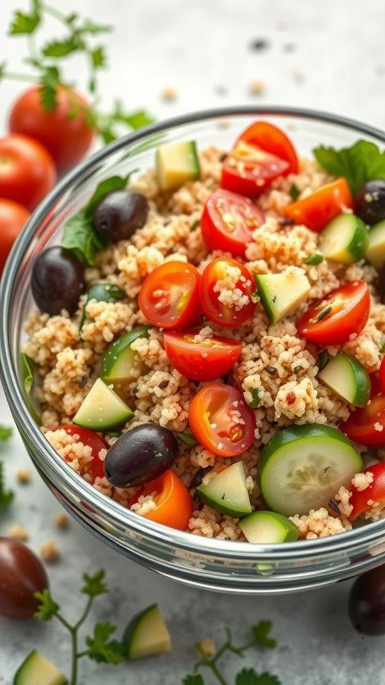
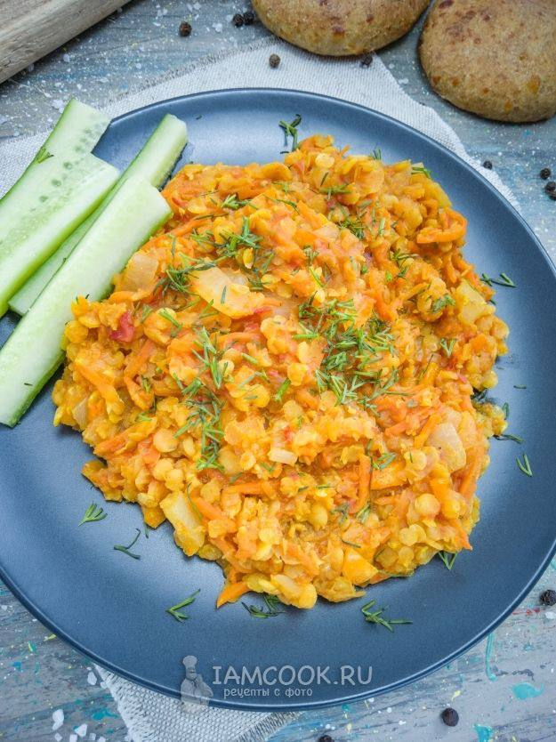
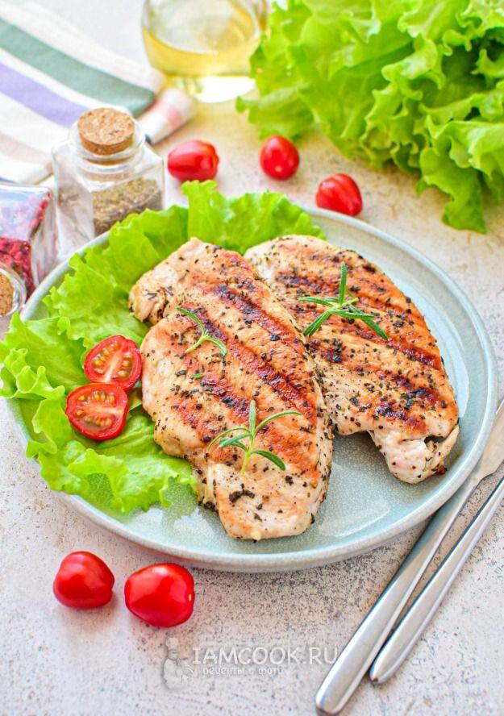
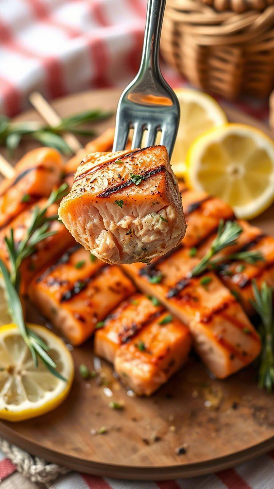
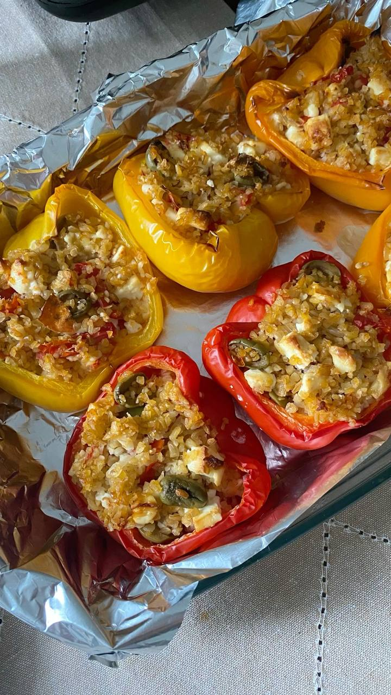
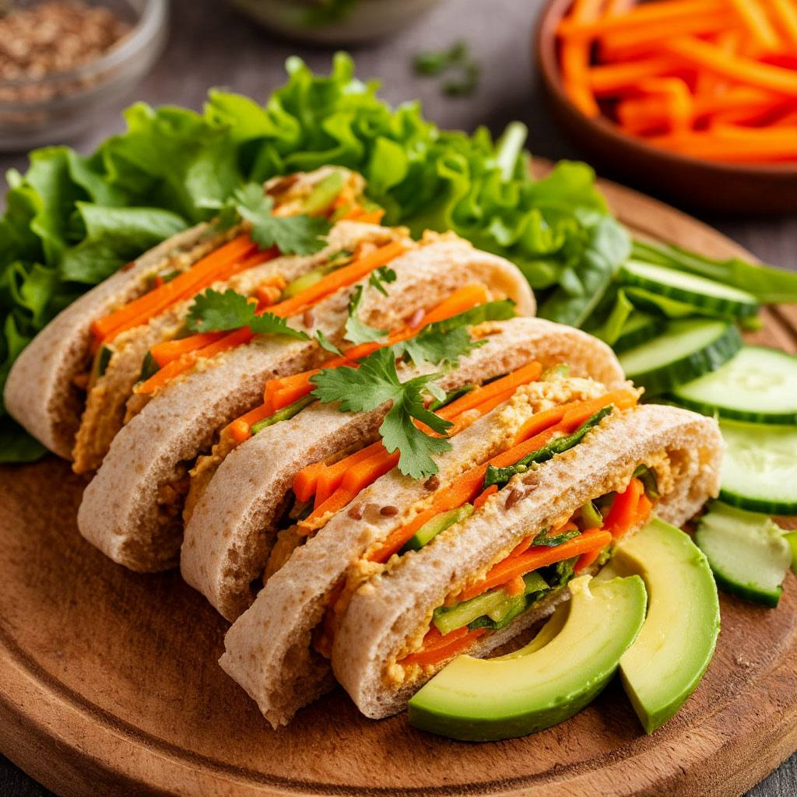
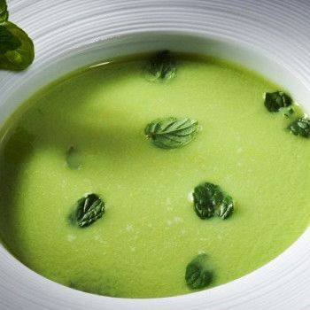
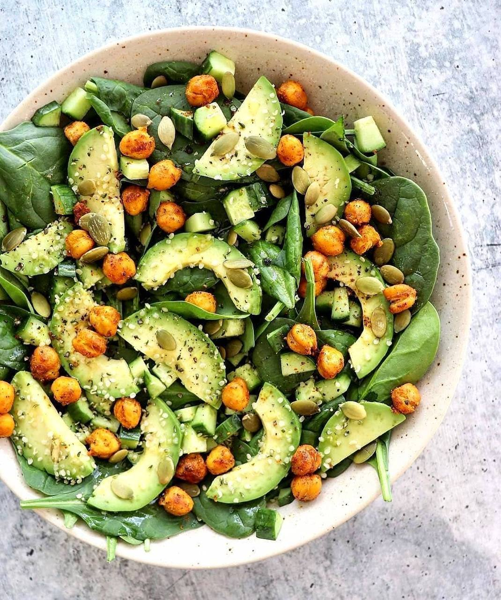
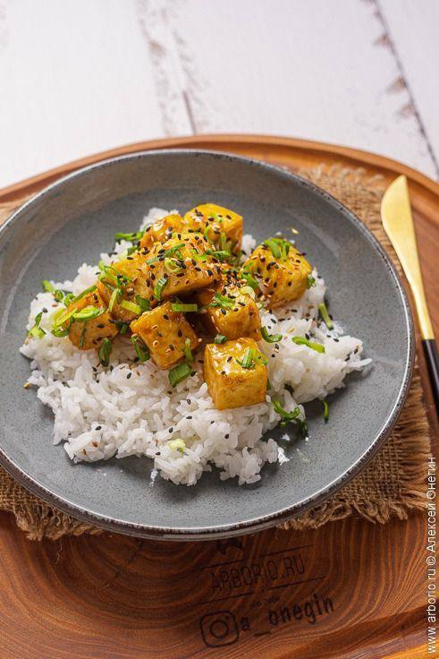

Рецепты
Салат с киноа и свежими овощами
📌 Ингредиенты:
- 1 стакан варёной киноа
- 8–10 помидоров черри (половинками)
- 1 небольшой огурец (нарезанный кубиками)
- 1 сладкий перец (нарезанный полосками)
- Горсть рукколы или микс салатных листьев
- 1 ст. л. оливкового масла
- Сок 1/2 лимона
- Соль и свежемолотый перец по вкусу
Процесс приготовления. В глубокой миске смешайте варёную киноа и нарезанные овощи. Добавьте рукколу, заправьте оливковым маслом и лимонным соком. Посолите, поперчите и тщательно перемешайте. Дайте настояться 5–10 минут перед подачей.
КБЖУ (на порцию, приблизительно): Калории – 350 ккал, Белки – 10 г, Жиры – 12 г, Углеводы – 50 г
Рагу из чечевицы с овощами
📌 Ингредиенты:
- 1 стакан красной чечевицы (предварительно промытой)
- 1 средняя морковь (нарезанная кубиками)
- 1 маленький кабачок (нарезанный)
- 1 банка (400 г) измельчённых помидоров
- 1 луковица (мелко нарезанная)
- 2 зубчика чеснока (измельчённые)
- 1–2 ст. л. оливкового масла
- 2 стакана воды или овощного бульона
- Соль, перец и специи (например, паприка, куркума) по вкусу
В глубокой кастрюле разогрейте оливковое масло и обжарьте лук вместе с чесноком до прозрачности. Добавьте морковь и кабачок, обжаривайте 3–4 минуты. Засыпьте чечевицу, влейте измельчённые помидоры и воду/бульон. Добавьте специи, посолите и поперчите. Тушите на среднем огне 20 минут, пока чечевица и овощи не станут мягкими. При необходимости можно немного размять содержимое для получения кремовой консистенции.
КБЖУ (на порцию, приблизительно): Калории – 320 ккал, Белки – 15 г, Жиры – 8 г, Углеводы – 55 г
Филе курицы на гриле с овощами
📌 Ингредиенты:
- 150–200 г куриного филе
- Ассорти овощей (брокколи, спаржа, морковь) – 200 г
- 1 ст. л. оливкового масла
- Сок 1/2 лимона
- 1-2 зубчика чеснока (измельчённых)
- Соль, перец и любимые травы (например, розмарин)
Замаринуйте куриное филе в лимонном соке, чесноке, соль, перце и травах минимум 20 минут. Разогрейте гриль или сковороду-гриль и обжарьте филе до полной готовности (примерно 5–7 минут с каждой стороны). Одновременно обжарьте или слегка припустите овощи на оливковом масле до мягкости, сохраняя яркий цвет. Подавайте курицу с гарниром из овощей.
КБЖУ (на порцию, приблизительно): Калории – 300 ккал, Белки – 30 г, Жиры – 10 г, Углеводы – 10 г
Лосось, запечённый с лимоном и травами
📌 Ингредиенты:
- 150–200 г филе лосося
- 1 ч. л. оливкового масла
- Сок 1/2 лимона
- Соль, перец и любимые травы (например, розмарин)
Разогрейте духовку до 180°C. Выложите филе лосося на противень, сбрызните лимонным соком, добавьте немного цедры, травы, соль и перец. Полейте оливковым маслом. Запекайте 12–15 минут до легкой прозрачности рыбы. Подавайте с лимонными дольками.
КБЖУ (на порцию, приблизительно): Калории – 350 ккал, Белки – 30 г, Жиры – 20 г, Углеводы – 0–2 г
Фаршированные перцы с индейкой и киноа
📌 Ингредиенты:
- 2–3 больших болгарских перца
- 150 г фарша из индейки
- 1/2 стакана варёной киноа
- 1 небольшая луковица (мелко нарезанная)
- 1 зубчик чеснока (измельчённый)
- 1 помидор (нарезанный кубиками)
- 1 ст. л. оливкового масла
- Соль, перец и любимые травы (например, розмарин)
Разогрейте духовку до 180°C. Очистите перцы, аккуратно удалите семена. На сковороде разогрейте оливковое масло, обжарьте лук и чеснок до мягкости, добавьте фарш, помидор и киноа. Тушите 5–7 минут, приправив специями. Начините перцы полученной смесью и разместите их в форме для запекания. Запекайте 25–30 минут до мягкости перцев.
КБЖУ (на порцию, приблизительно): Калории – 350 ккал, Белки – 25 г, Жиры – 12 г, Углеводы – 35 г
Роллы из цельнозернового лаваша с овощами и хумусом
📌 Ингредиенты:
- 1 лист цельнозернового лаваша
- 3–4 ст. л. хумуса
- 1 небольшой огурец (нарезанный тонкими полосками)
- 1 средняя морковь (натёртая или нарезанная соломкой)
- Небольшой пучок салатных листьев (например, руккола или шпинат)
- (По желанию) несколько ломтиков авокадо
Равномерно намажьте лаваш хумусом. Выложите овощи и, если используете, авокадо. Аккуратно сверните лаваш в плотный рулет. Нарежьте на порционные кусочки и подавайте.
КБЖУ (на порцию, приблизительно): Калории – 300 ккал, Белки – 10 г, Жиры – 8 г, Углеводы – 45 г
Суп-пюре из брокколи и шпината
📌 Ингредиенты:
- 200 г брокколи (соцветия)
- 1 горсть свежего шпината
- 1 средний картофель (очищенный и нарезанный кубиками)
- 1 небольшая луковица (нарезанная)
- 1–2 зубчика чеснока
- 2 стакана овощного бульона
- 1 ст. л. оливкового масла
- Соль и перец по вкусу
Обжарьте на оливковом масле лук и чеснок до мягкости. Добавьте картофель и брокколи, влейте бульон и варите 15–20 минут до мягкости овощей. В конце варки добавьте шпинат и перемешайте. Измельчите всю массу в блендере до получения гладкого пюре. Посолите и поперчите по вкусу, при подаче можно украсить зеленью.
КБЖУ (на порцию, приблизительно): Калории – 220 ккал, Белки – 7 г, Жиры – 8 г, Углеводы – 30 г
Здоровый омлет с овощами
📌 Ингредиенты:
- 2–3 яйца
- Горсть шпината или микс салатных листьев
- 1 маленький помидор (нарезанный кубиками)
- 1/2 сладкого перца (нарезанного полосками)
- 1 ч. л. оливкового масла
- Соль и перец по вкусу
Взбейте яйца в миске с солью и перцем. На разогретой сковороде с оливковым маслом слегка обжарьте овощи 2–3 минуты. Залейте овощи яйцами и готовьте на медленном огне до схватывания омлета. При необходимости, накройте крышкой для более равномерного пропекания.
КБЖУ (на порцию, приблизительно): Калории – 250 ккал, Белки – 20 г, Жиры – 18 г, Углеводы – 5 г
Салат с нутом и авокадо
📌 Ингредиенты:
- 1 стакан варёного нута (можно использовать консервированный, предварительно промытый)
- 1 спелый авокадо (нарезанный кубиками)
- 8–10 помидоров черри (разрезанных пополам)
- 1 небольшой огурец (нарезанный кубиками)
- 1/4 красного лука (тонкими кольцами)
- Горсть рукколы или салатного микса 1 ст. л. оливкового масла
- Сок 1/2 лимона
- Соль и перец по вкусу
Поместите все нарезанные овощи и нут в большую миску. Добавьте авокадо, рукколу, приправьте лимонным соком, оливковым маслом, солью и перцем. Тщательно перемешайте и подавайте сразу после приготовления.
КБЖУ (на порцию, приблизительно): Калории – 350 ккал, Белки – 12 г, Жиры – 18 г, Углеводы – 40 г
Рис с овощами и тофу
📌 Ингредиенты:
- 1 стакан вареного коричневого риса
- 150 г брокколи (соцветия, слегка бланшированные)
- 1 средняя морковь (нарезанная тонкими полосками или кубиками)
- 1/2 болгарского перца (нарезанного)
- 1-2 ст. л. соевого соуса (с пониженным содержанием соли)
- 1 зубчик чеснока (измельчённый) 1 ч. л. свежего имбиря (тертого)
- 1 ст. л. оливкового или кунжутного масла
На разогретой сковороде обжарьте тофу до золотистой корочки. Добавьте чеснок, обжаривайте 5–7 минут до мягкости. Всыпьте вареный рис, влейте соевый соус, перемешайте и прогрейте всё вместе ещё 2–3 минуты. Подайте блюдо, можно посыпать свежей зеленью или кунжутом.
КБЖУ (на порцию, приблизительно): Калории – 400 ккал, Белки – 15 г, Жиры – 12 г, Углеводы – 60 г
Изображения (частично) взяты из Pinterest.